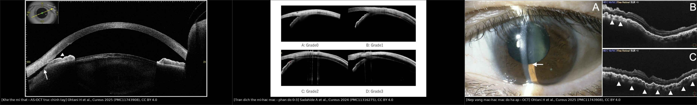
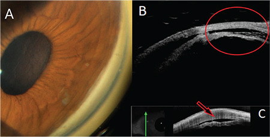
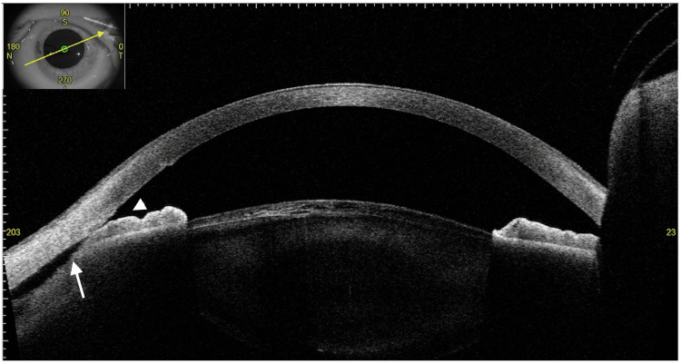
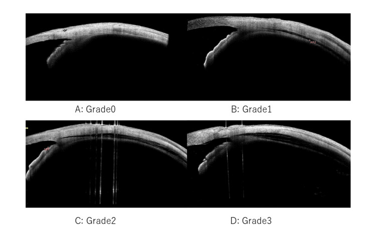
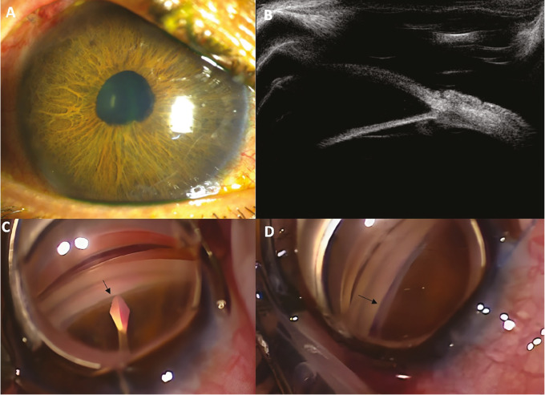

1447 — Rách thể mi sau MIGS và sau cố định IOL kiểu Yamane / Cyclodialysis cleft after MIGS and Yamane intrascleral IOL fixation
Tags: pattern:rach-the-mi pattern:bong-the-mi pattern:ha-nhan-ap pattern:tien-phong-nong pattern:nep-vong-mac pattern:sau-mo-glaucoma pattern:sau-yamane pattern:giam-thi-luc pattern:mat-mot-ben vung:mat vung:the-mi vung:goc-tien-phong vung:hac-mac vung:hoang-diem protocol:gonioscopy protocol:UBM protocol:AS-OCT protocol:OCT score:IOP
Mức chắc chắn (certainty): tổng hợp y văn (literature synthesis) — 1 tổng quan xử trí rách thể mi (2025), 1 phân tích gộp 100 năm phẫu thuật cyclodialysis (40 nghiên cứu), 1 tổng quan an toàn từng thiết bị MIGS, 2 đoàn hệ AS-OCT về tràn dịch thể mi–hắc mạc sau goniotomy (91 và 62 mắt), 1 đoàn hệ AS-OCT sau Yamane (45 mắt), và 6 ca nguyên văn có ảnh (KDB, GATT, microhook, Yamane ×2, cyclopexy nội soi). Không có RCT so sánh atropine–laser–mổ; các ngưỡng là tổng hợp từ thuật toán Ormerod cải tiến + chuỗi ca.
Vì sao bài này quan trọng: bài 1434 đã dạy hạ nhãn áp sau quang đông thể mi và đặt MIGS/Yamane vào ma trận như một hàng. Bài này trả lời câu hỏi mà hàng đó chưa trả lời: sau một cuộc mổ glôcôm “thành công”, vì sao nhãn áp lại 3–5 mmHg — và khi nào đó là rách thể mi thật, khi nào chỉ là tràn dịch thể mi–hắc mạc thoáng qua? Đây là nhóm thủ thuật đang tăng nhanh, biến chứng xuất hiện sau mổ vài tuần đến 14 tháng, và điểm chết người là hai bệnh cảnh trông giống hệt trên AS-OCT thường quy nhưng một bên tự hết, một bên cần laser hoặc mổ lại. Bỏ sót khe → nếp hoàng điểm vĩnh viễn; mổ quá sớm một tràn dịch thoáng qua → tăng nhãn áp dữ dội sau khi đóng khe.
Sửa tiền đề của backlog (trung thực nguồn): backlog ghi “rách thể mi sau MIGS/Yamane” như một biến chứng đơn nhất. Y văn cho thấy hai tầng khác nhau: (1) tràn dịch thể mi–hắc mạc (ciliochoroidal detachment, CCD) — rất thường gặp sau mọi MIGS ab interno (19,7–29%) và sau Yamane (80% ngày 1), phần lớn tự hết trong 1 tháng, và (2) khe thể mi thật (cyclodialysis cleft) — hiếm (1,2–1,9% theo thiết bị), không tự đóng, mới là thứ cần can thiệp. Bài này tách hai tầng đó ra thay vì gộp thành “rách thể mi”.
1. Tổng quan bệnh học – cơ chế hình ảnh – vì sao “mổ nhẹ” vẫn rách thể mi
- Giải phẫu quyết định: các sợi cơ thể mi hướng tâm (meridional ciliary muscle) bám vào scleral spur; khi chúng bong khỏi spur, tiền phòng thông trực tiếp với khoang trên hắc mạc. Đây là rách thể mi (cyclodialysis cleft) — một đường rò nội bộ, không phải “viêm” và không phải “giảm sản xuất đơn thuần”.
- TẠI SAO MIGS ab interno gây rách: dụng cụ (lưỡi KDB, microhook, ống thông GATT) đi vào góc tiền phòng và cắt bè/ống Schlemm ngay sát spur. Nếu đầu dụng cụ trượt sâu ra sau hoặc kéo dọc theo sợi cơ thể mi, lực căng dồn vào spur → bong sợi hướng tâm. Vì vậy khe thường khu trú đúng vị trí đường vào, và không tương quan với mức hạ áp (khe nhỏ vẫn hạ áp nặng vì phần “giảm sản xuất” đi kèm).
- TẠI SAO Yamane gây rách theo kiểu khác: kim 27–30G xuyên qua củng mạc cách rìa giác mạc ~2 mm, đi vào ciliary sulcus; đường hầm và haptic tạo một đường thông phía sau góc. Hệ quả: gonioscopy chỉ loại trừ được khe phía trước, còn khe sau kim không thấy — phải dùng siêu âm/UBM. Tệ hơn, chính haptic có thể chèn vào đường rò, giữ khe mở, nên atropine thường thất bại (2 ca Yamane trong y văn đều vậy).
- TẠI SAO hạ áp làm mờ mắt: nhãn cầu xẹp → củng mạc lún vào trong → nếp võng mạc–hắc mạc ở hoàng điểm → tế bào quang thụ biến dạng cơ học, cận thị hóa, nhìn biến dạng. Nếp có thể hồi phục nếu nâng áp sớm, nhưng hạ áp kéo dài để lại nếp vĩnh viễn.
- TẦNG 1 — tràn dịch thể mi–hắc mạc (CCD) thoáng qua: sau goniotomy, AS-OCT ngày 1 phát hiện 19,7% (18/91) sau KDB và 29% (18/62) sau microhook; biến mất trong 1 tháng. Sau Yamane, CCD ngày 1 gặp 80% (20/25) so với 60% (12/20) ở nhóm cắt dịch kính chứng (khác biệt không có ý nghĩa), còn 8% vẫn còn ở tháng 1. Cơ chế: hạ áp + viêm + tăng tính thấm → dịch thoát vào khoang trên hắc mạc, không có đường thông thật.
- TẦNG 2 — khe thể mi thật: tỉ lệ theo thiết bị trong tổng quan an toàn MIGS: KDB 1,2%, Trabectome 1,2%, iStent 1,9%, Hydrus 0,4%; hạ áp chung sau KDB 0–3,13%. Y văn chấn thương ghi 1–11% rách thể mi sau chấn thương đụng dập — đây là mốc so sánh, không phải tỉ lệ sau MIGS.
- Yếu tố nguy cơ đã báo cáo: mổ phối hợp với phaco (CCD sau KDB tăng rõ), giác mạc trung tâm mỏng (yếu tố duy nhất trong phân tích đa biến sau microhook), cận thị cao, tiền sử chấn thương/góc hẹp, và thao tác của phẫu thuật viên (trong loạt KDB, CCD khác nhau theo người mổ, p < 0,05).
- Dấu hiệu định lượng cần nhớ: hạ áp = IOP ≤ 5 mmHg; CCD phân độ theo AS-OCT: grade 1 < ½ độ dày thể mi, **grade 2** ≥ ½, **grade 3** > độ dày thể mi; sau đóng khe, tăng áp dội ngược thường gặp trong vài ngày đầu — ca GATT có IOP 42 mmHg ngày 1, ca microhook 35 mmHg — đây là dấu hiệu thành công, không phải biến chứng.
2. Mẫu hình + chẩn đoán phân biệt theo thời điểm (Gamut)
- Ngày 1–7 sau mổ: hạ áp nhẹ + CCD trên AS-OCT (grade 1–2) là bình thường ở 20–80% tùy thủ thuật; tiền phòng có thể nông; không vội mổ.
- Tuần 2 – tháng 3: CCD lẽ ra phải hết; nếu IOP vẫn ≤ 5 mmHg, tiền phòng nông, hoặc xuất hiện nếp hoàng điểm → tìm khe thật.
- Sau 3 tháng: khe mạn/ẩn (đã có ca 14 tháng không chẩn đoán được), thường biểu hiện bằng cận thị hóa, nhìn mờ, nếp hoàng điểm, IOP 2–6 mmHg.
- Theo vị trí khe: trước (anterior) — thấy trên gonioscopy, thường sau MIGS/chấn thương; sau (posterior) — sau kim Yamane/haptic, gonioscopy âm, phải UBM/siêu âm; 360° — hiếm, gây hạ áp nặng, cần mổ.
- Gamut “hạ áp sau MIGS/Yamane”: CCD thoáng qua · khe thể mi thật · suy thể mi (đốt thể mi trước đó) · rò vết mổ/bọng lọc · van dẫn lưu quá tải · viêm thể mi/nội nhãn · bong võng mạc · xuất huyết trên hắc mạc · hạ áp do thuốc (hiếm).
3. Bảng so sánh phân biệt (ma trận đối chiếu)
| Thực thể (entity) | Hình ảnh/lâm sàng điển hình | Chốt vào (rule-in) | Chốt loại (rule-out) | Gợi ý xác nhận |
|---|---|---|---|---|
| CCD thoáng qua sau MIGS/Yamane | AS-OCT ngày 1: khoang giảm phản xạ giữa thể mi và củng mạc (grade 1–3), không có khe thông; IOP có thể thấp nhẹ; hết trong 1 tháng | Dịch trên hắc mạc + không thấy đường thông + tự cải thiện | Khe rõ trên UBM/AS-OCT hoặc kéo dài > 1 tháng → không còn là thoáng qua | AS-OCT 8 hướng/360°; đo IOP ngày 1, tuần 1, tháng 1 |
| Khe thể mi thật (cyclodialysis cleft) | Đường thông tiền phòng → khoang trên hắc mạc tại spur; IOP ≤ 5 mmHg; tiền phòng nông; nếp hoàng điểm | Thấy khe trực tiếp trên gonioscopy/UBM/AS-OCT; hạ áp kéo dài; hồi phục sau đóng khe | Không thấy khe nhưng hạ áp → suy thể mi/rò khác; CCD đơn thuần → theo dõi | Gonioscopy động + UBM 35–50 MHz; AS-OCT trục chỉnh tay; siêu âm khi khe sau |
| Khe sau Yamane (posterior) | Haptic xuyên củng mạc; gonioscopy âm; hạ áp + nếp; UBM thấy đường thông quanh haptic | UBM/siêu âm thấy khe sau + haptic trong đường rò | Gonioscopy âm không loại trừ; atropine thất bại là gợi ý | UBM, siêu âm cao tần; đối chiếu vị trí haptic |
| Suy thể mi | Tiền sử đốt thể mi/lặp đốt; thể mi mỏng/teo; không khe; IOP thấp | Không có đường thông + bối cảnh đốt nhiều | Thấy khe → khe là nguyên nhân | UBM; AS-OCT; theo dõi |
| Rò vết mổ/bọng lọc | Seidel dương, bọng lọc quá to, tiền phòng nông | Seidel dương + bọng lọc | Seidel âm, không bọng → loại trừ | Seidel test, đèn khe, AS-OCT vết mổ |
| Van dẫn lưu quá tải | IOP thấp, tiền phòng nông, có thể bong hắc mạc; tiền sử đặt van | Van không có buồng/van, ống quá ngắn, đĩa bị bóc | Van hoạt động, IOP ổn → loại trừ | Siêu âm/AS-OCT ống van; X-quang |
| Viêm thể mi/nội nhãn | Đau, đỏ, tế bào/flare, mủ tiền phòng, IOP thấp | Dấu viêm rõ + cấy dương | Không viêm, không mủ → loại trừ | Đèn khe, cấy/PCR; điều trị viêm trước |
| Bong võng mạc | IOP thấp, không thấy đáy mắt, B-scan có màng | Bong võng mạc trên B-scan | Võng mạc áp → loại trừ | B-scan; soi đáy mắt rộng |

Ba ô: (1) khe thể mi thật — AS-OCT trục chỉnh tay thấy bong góc + tiếp xúc mống mắt–bè (mũi tên/đầu mũi tên); (2) CCD thoáng qua — phân độ grade 0–3 theo độ dày thể mi; (3) nếp võng mạc–hắc mạc do hạ áp. Ảnh: Ohtani H và cs., Cureus 2025 (PMC11743908), Sadahide A và cs., Cureus 2024 (PMC11316275) — CC BY 4.0, xem images/CREDITS.md.
4. Protocol: phát hiện, phân tầng và thuật toán xử trí
- Ngày 1 sau mọi MIGS/Yamane: đo IOP, đèn khe (tiền phòng, Seidel), hỏi thị lực. Không cần AS-OCT thường quy nếu IOP ổn và không triệu chứng — vì CCD sinh lý sẽ chỉ làm ta can thiệp thừa.
- Khi IOP ≤ 5 mmHg hoặc thị lực giảm không giải thích được:
- Gonioscopy động (ấn nhẹ, viscoelastic nếu tiền phòng nông) tìm khe phía trước.
- AS-OCT góc 360° (8 hướng hoặc chế độ tự động) + UBM 35–50 MHz nếu nghi khe sau hoặc AS-OCT không thấy.
- AS-OCT trục chỉnh tay khi chế độ mặc định báo “bình thường”: xoay mống mắt do thể mi bong có thể che khe — ca microhook chỉ lộ khe 203° khi chỉnh tay.
- OCT hoàng điểm tìm nếp/dịch; B-scan nếu không thấy đáy mắt.
- Phân tầng xử trí (thuật toán Ormerod cải tiến):
- Nội khoa trước: atropine 1% (giãn thể mi, kéo thể mi về spur) + corticoid tại chỗ giảm viêm; theo dõi 2–4 tuần. Đây là điều trị đầu tay cho khe nhỏ, hạ áp nhẹ, và cho CCD thoáng qua.
- Laser khi khe < 3 giờ đồng hồ và nội khoa thất bại: argon laser qua gonioprism (hoặc diode transscleral/Nd:YAG ab externo). Cơ chế: viêm do laser gây dính thể mi vào củng mạc. Ca KDB đóng khe sau 3 lần argon; ca GATT thất bại với atropine 2 tuần + argon → phải mổ.
- Cyclopexy khi khe 3–6 giờ hoặc laser thất bại: khâu trực tiếp thể mi vào củng mạc (ab externo có vạt củng mạc, hoặc ab interno qua tiền phòng — ít xâm lấn, không mở kết mạc). Chuỗi 29 ca direct cyclopexy: 28/29 đóng thành công; một số loạt chỉ 50% sau một lần mổ.
- Cắt dịch kính + bơm khí khi khe > 6 giờ, khe 360°, hoặc khe sau Yamane có haptic chèn: tamponade đẩy thể mi áp vào củng mạc; có thể cần rút/chỉnh haptic.
- Sau khi đóng khe: cảnh báo tăng nhãn áp dội ngược (ca GATT 42 mmHg, ca microhook 35 mmHg ngày đầu) — đo IOP ngày 1–3, dùng thuốc hạ áp; đừng nhầm là “mổ thất bại”.
- Dự phòng trong lúc mổ (checklist):
- Luôn thấy đầu dụng cụ trong góc; không đẩy sâu qua spur, không kéo dọc sợi cơ thể mi.
- Giữ tiền phòng bằng viscoelastic đủ sâu để tách mống mắt khỏi góc và giảm ma sát.
- Kiểm tra góc bằng gonioscopy ngay cuối mổ ở mắt nguy cơ (cận thị cao, CCT mỏng, mổ phối hợp).
- Yamane: đường hầm củng mạc ~2 mm sau rìa, kiểm tra haptic nằm trong sulcus, không xuyên qua thể mi; đóng kín vết mổ, kiểm tra Seidel.
- Ở mắt đã có tiền sử chấn thương/góc hẹp: hạ thấp ngưỡng nghi ngờ, hẹn khám lại sớm hơn.
flowchart TD
A[Ha nhan ap sau MIGS/Yamane] --> B[IOP + den khe + Seidel]
B --> C{Co khe tren gonioscopy/UBM/AS-OCT?}
C -->|Khong| D{CCD don thuan, IOP on dinh?}
D -->|Co| E[Theo doi 4 tuan: atropine + corticoid]
D -->|Khong| F[Tim ro vet mo/van/viem/bong vong mac]
C -->|Co| G{Kich thuoc khe}
G -->|< 3 gio| H[Atropine + corticoid 2–4 tuan]
H --> I{Con ha ap?}
I -->|Co| J[Argon laser qua gonioprism]
I -->|Khong| K[Theo doi IOP]
G -->|3–6 gio| L[Cyclopexy: ab externo hoac ab interno]
G -->|> 6 gio hoac khe sau Yamane| M[Cat dich kinh + bom khi, chinh/rut haptic]
J --> N[Doi IOP ngay 1–3: tang doI nguoc 40 mmHg la dau hieu dong khe]
L --> N
M --> N
5. Biến thể bình thường và cạm bẫy
- CCD sau MIGS là “biến thể bình thường” ở mức độ nhẹ: 19,7–29% sau goniotomy, 80% sau Yamane ngày 1, tự hết trong 1 tháng. Điều trị mọi CCD bằng atropine dài ngày là can thiệp thừa.
- Cạm bẫy AS-OCT mặc định: ở ca microhook, chế độ tự động 45° không thấy khe vì mống mắt xoay ra trước che góc; chỉnh trục tay mới lộ bong 203°. Không được kết luận “không có khe” từ một lần quét mặc định.
- Cạm bẫy gonioscopy sau Yamane: khe phía sau góc không thấy bằng gương soi góc; gonioscopy âm không loại trừ. Phải UBM/siêu âm.
- Cạm bẫy “atropine là đủ”: với khe sau Yamane, haptic giữ khe mở nên atropine thất bại; cần laser định vị hoặc rút/chỉnh haptic.
- Cạm bẫy tăng áp sau đóng khe: IOP 40–42 mmHg ngày 1 là dấu hiệu khe đã đóng, không phải biến chứng; xử trí bằng thuốc, không mổ lại ngay.
- Cạm bẫy “hạ áp = rách thể mi”: sau đốt thể mi trước đó, hạ áp có thể do suy thể mi (bài 1434); tìm khe trước khi mổ là bắt buộc.
- Cạm bẫy dùng corticoid kéo dài: ở mắt đáp ứng corticoid, chính corticoid làm tăng IOP và che mất dấu hiệu đóng khe; đo IOP sau 1–2 tuần.
- Biến thể giải phẫu: cận thị cao làm củng mạc mỏng, dễ rách hơn và nếp hoàng điểm nặng hơn; góc hẹp làm gonioscopy khó, phải dùng viscoelastic/UBM.
6. Tự lượng giá — Blind Quiz
Ca 1 — Nữ 69 tuổi, phaco + KDB một năm trước, nhìn mờ và đau mắt trái; IOP 3 mmHg, tiền phòng sâu bình thường.

- Gợi ý lâm sàng: đáy mắt có nếp võng mạc; không sốt, không mủ tiền phòng.
- Câu hỏi: (1) Ba phương tiện trong ảnh cho thấy gì? (2) Vì sao tiền phòng vẫn sâu? (3) Bước tiếp theo?
Bấm để hiện đáp án (findings + chẩn đoán)
- Dấu hiệu: (A) gonioscopy thấy khe/dải bong ở góc 10 giờ; (B) UBM xác nhận bong thể mi khỏi spur; (C) AS-OCT thấy đường tách thể mi (mũi tên).
- Chẩn đoán: khe thể mi thật sau KDB, hạ áp 3 mmHg, bệnh hoàng điểm do hạ áp (nếp). Tiền phòng sâu vì dịch thoát qua khe, không phải qua vết mổ.
- Bước tiếp: atropine + corticoid, nếu không đóng → argon laser (ca gốc đóng sau 3 lần); theo dõi IOP và OCT hoàng điểm.
- Nguồn ảnh: Şimşek D, Wagner I, Draper C, Şimşek T, Dorairaj S. Turk J Ophthalmol 2023;53(4):257–260 (PMC10442746), Fig. 1 — CC BY-NC-ND 4.0, dùng nguyên bản.
Ca 2 — Nam 40 tuổi, microhook 14 tháng trước, hạ áp kéo dài; AS-OCT mặc định và gonioscopy ở tuyến trước đều “không thấy khe”.

- Gợi ý lâm sàng: nhìn mờ, cận thị hóa, tiền phòng nông nhẹ, đồng tử biến dạng.
- Câu hỏi: (1) Vì sao AS-OCT mặc định bỏ sót? (2) Mũi tên và đầu mũi tên chỉ gì? (3) Xử trí?
Bấm để hiện đáp án (findings + chẩn đoán)
- Dấu hiệu: ảnh nhỏ góc trên cho thấy trục quét chỉnh tay 23°–203°; lát cắt chính: bong góc (mũi tên) và tiếp xúc mống mắt–bè do mống mắt xoay ra trước (đầu mũi tên).
- Chẩn đoán: khe thể mi mạn 203° sau microhook; AS-OCT mặc định bỏ sót vì mống mắt xoay che góc, không phải vì không có khe.
- Xử trí: ca gốc cyclopexy nội soi trực tiếp; sau mổ IOP 35 mmHg (tăng dội ngược) rồi cần van Ahmed; nếp hoàng điểm cải thiện.
- Nguồn ảnh: Ohtani H và cs., Cureus 2025;17(1):e77516 (PMC11743908), Fig. 4 — CC BY 4.0.
Ca 3 — Nam 71 tuổi, cố định IOL kiểu Yamane 1 tháng trước; IOP 4 mmHg, nhìn mờ; gonioscopy không thấy khe.

- Gợi ý lâm sàng: tiền phòng nông, haptic thấy mờ qua kết mạc; không đau.
- Câu hỏi: (1) Ảnh phân độ gì? (2) Có phải khe thật không? (3) Vì sao gonioscopy âm vẫn phải làm UBM?
Bấm để hiện đáp án (findings + chẩn đoán)
- Dấu hiệu: phân độ CCD grade 0–3 theo độ dày thể mi (grade 1 < ½, grade 2 ≥ ½, grade 3 > độ dày thể mi).
- Chẩn đoán: CCD sau Yamane — thường gặp (80% ngày 1), phần lớn thoáng qua; nhưng nếu kéo dài + nếp hoàng điểm phải tìm khe sau quanh haptic.
- Vì sao UBM: khe sau kim nằm ngoài tầm nhìn của gonioscopy; ca Yamane trong y văn có atropine thất bại vì haptic giữ khe mở, phải laser định vị/chỉnh haptic.
- Nguồn ảnh: Sadahide A, Ohara H, Oda R, Harada Y. Cureus 2024;16(8):e66562 (PMC11316275), Fig. 1 — CC BY 4.0.
Ca 4 — Bệnh nhân GATT, hạ áp dai dẳng; sau cyclopexy 2 tuần, UBM dưới đây.

- Gợi ý lâm sàng: IOP 24 mmHg sau mổ, tiền phòng sâu, không đau.
- Câu hỏi: (1) UBM xác nhận điều gì? (2) Vì sao IOP tăng sau mổ? (3) Theo dõi gì?
Bấm để hiện đáp án (findings + chẩn đoán)
- Dấu hiệu: (A) giác mạc trong; (B) UBM xác nhận đóng hoàn toàn khe + hết dịch trên hắc mạc; (C–D) hình soi góc/khâu sau mổ.
- Chẩn đoán: khe thể mi sau GATT đã đóng; IOP 24 mmHg là tăng áp dội ngược (dấu hiệu thành công), sau đó duy trì 12–16 mmHg với latanoprost.
- Theo dõi: IOP ngày 1–3 và tuần 1, OCT hoàng điểm, UBM lặp nếu IOP lại thấp.
- Nguồn ảnh: Üçgül AY, Aktaş Z. Turk J Ophthalmol 2026;56(2):135–139 (PMC13112503), Fig. 3 — CC BY-NC-ND 4.0, dùng nguyên bản.
Bài liên quan chéo
- 1434 – Hạ nhãn áp sau quang đông thể mi & rách thể mi
- 1446 – Phù hoàng điểm sau quang đông thể mi
- 1431 – Quang đông thể mi ở mắt bơm dầu
- 1416 – Glôcôm do dầu silicone
- 1425 – Viêm nội nhãn sau tiêm nội nhãn
Ảnh
images/1447_rach-the-mi-sau-migs-va-yamane_UBM-AS-OCT_PMC10442746-Fig1.jpg— khe sau KDB (gonioscopy/UBM/AS-OCT), CC BY-NC-ND 4.0.images/1447_rach-the-mi-sau-migs-va-yamane_AS-OCT-manual_PMC11743908-Fig4.jpg— AS-OCT trục chỉnh tay, khe 203°, CC BY 4.0.images/1447_rach-the-mi-sau-migs-va-yamane_AS-OCT-CCD-grade_PMC11316275-Fig1.jpg— phân độ CCD 0–3, CC BY 4.0.images/1447_rach-the-mi-sau-migs-va-yamane_OCT-nep-vong-mac_PMC11743908-Fig1.jpg— nếp võng mạc–hắc mạc do hạ áp, CC BY 4.0.images/1447_rach-the-mi-sau-migs-va-yamane_UBM-dong-cleft_PMC13112503-Fig3.jpg— UBM sau đóng khe, CC BY-NC-ND 4.0.images/composite_1447_cleft-CCD-fold.jpg— ảnh ghép 3 bệnh cảnh, tạo bằngtools/make_composite.py, không crop/kéo giãn.
Không dùng để chẩn đoán độc lập khi chưa có người hướng dẫn.